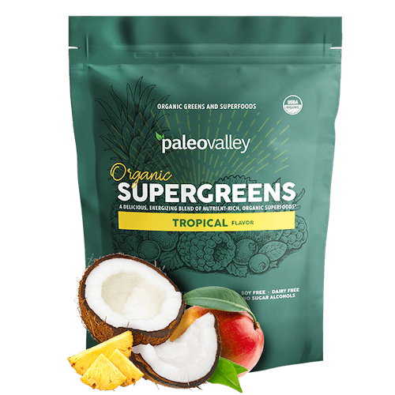

Fat
0.5g
Sodium
0.5g
Carbs
85g
Fiber
13g
Sugar
7g
Protein
4g
Calcium
150g
Iron
13mg
Potassium
409mg
INTRO
PaleoValley Organic
Supergreens Powder
Get Delicious energy support with 23 organic raw superfoods:
Organic Supergreens is a powerfull blend of organic antioxidents
rich superfoods, including kale, brocolli and turmeric gently dried to
preserve their nutrients and make them easy to absorb by your digestive
tract.
500M+
Happy Clients
20M+
Positive Reviews
100%
Organic Food
